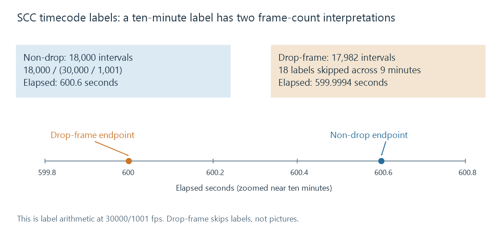

Scenarist Closed Captions (SCC)
SCC stores timecoded hexadecimal 608 caption words whose decoder commands determine the actual visible caption presentation.
SCC, Scenarist Closed Captions, stores 608 caption data as timecoded hexadecimal words. It is a file packaging convention for the caption byte/control model, rather than a plain-text subtitle sentence format.
An original small record can look like:
Scenarist_SCC V1.0
00:00:12:00 9420 9420 c8e9 942f 942f
The words carry caption bytes. They are not character strings to display as “9420” or “c8e9”.
Decode the words through the 608 model
In this illustrative sequence, 9420 represents a parity-bearing Resume Caption Loading control pair, c8e9 carries H and i, and 942f is an End Of Caption control pair. Repeated control pairs are part of the relevant 608 transmission/decoder handling; they should not produce repeated visible words.
A reader needs the caption command state and applicable channel context. The example is a small control sequence, not a complete professionally authored caption programme.
Arrival time and visible time can differ
Pop-on captions can be loaded into nondisplayed memory before a command reveals them. The timecode associated with a data record is therefore not automatically a complete visible interval for its final sentence.
A text extractor interprets the command sequence, derives display changes and constructs resulting cues. It must also schedule the words according to the applicable SCC timecode/transmission convention.
That is different from an SRT block whose first line directly states a cue's start/end timestamps.
Frame labels require their convention
At a rate of 30000/1001 frames per second, ten nominal minutes of non-drop-frame 30-based labels represent 18,000 frame intervals:
18,000 / (30,000 / 1,001) = 600.6 seconds
For the corresponding drop-frame counting convention, two labels are skipped at each applicable minute except each tenth minute. At ten minutes the skipped count is 2 × 9 = 18, leaving 17,982 intervals, about 599.9994 seconds.
Drop-frame skips labels, not picture frames. The colon/semicolon convention and the reader's timecode model must be handled appropriately; merely parsing four numeric fields cannot establish the correct elapsed time.

Reader versions can implement different details
The pinned Emby FFmpeg source 5.1-emby_2023_06_25_u1 accepts colon or semicolon at the final separator in its SCC demuxer, then calculates millisecond positions using a 33 ms frame term without a separate drop-frame-label adjustment in that code path.
That is an observed implementation detail of that dated parser, not the definition of SCC timing and not evidence of the parser in every current Emby installation.
For an Emby extraction comparison, identify the bundled tool version and compare recovered display times against known scenes. The valid-looking header and hexadecimal words establish the file's structure; command interpretation and timecode conversion establish its resulting caption presentation.